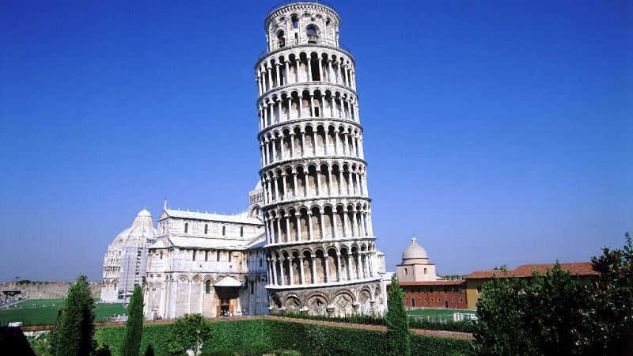

Pisa, Italia
As paisagens de Pisa são marcadas pela icónica Torre Inclinada e a sua arquitetura românica, que se encontra na Piazza dei Miracoli, um conjunto monumental que inclui a Catedral e o Batistério. Para além dos monumentos, a cidade oferece um charme histórico com ruas medievais, praças animadas como a Piazza delle Vettovaglie, e um belo passeio à beira-rio ao longo do Arno. A costa pisana, com as suas praias, como Marina di Pisa e Calambrone, proporciona uma beleza natural diferente, e a cidade celebra a sua tradição com o fascinante espetáculo de velas em honra de São Ranieri.
- Piazza dei Miracoli: É o coração de Pisa e o local onde se encontra o conjunto monumental mais famoso, incluindo a Torre Inclinada, a Catedral (Duomo), o Batistério e o Camposanto (cemitério monumental).
- Estilo Pisano: Os edifícios da cidade exibem o peculiar estilo românico pisano, com a Catedral e o Batistério como exemplos imponentes deste estilo artístico e arquitetónico.
- Centro Histórico: As ruas medievais e as praças, como a Via Mercanti e a Borgo Stretto, oferecem uma atmosfera autêntica da Toscana e abrigam o comércio elegante, cafés e a vibrante vida da cidade.
- Costa de Pisa: Pisa é famosa não só pelos seus monumentos, mas também pelas belas praias da costa do Mar Tirreno.
- Marina di Pisa: É um dos locais mais procurados para encontrar as melhores praias da região, com um cenário natural que pode ser explorado em passeios de bicicleta.
- Parques e Natureza: Em zonas mais próximas da costa, como a Marina di Pisa, o Il Pineto Parco Avventura oferece percursos suspensos em árvores, sendo uma ótima opção para quem procura aventura na natureza.
- Pôr do Sol: O pôr do sol em Pisa é considerado maravilhoso, proporcionando um espetáculo visual incrível para os visitantes.
- Festival de San Ranieri: No dia 16 de junho, Pisa oferece uma visão única e deslumbrante. As luzes da cidade são apagadas e substituídas por mais de 70 mil velas, que criam um belo cenário refletido no Rio Arno, um evento que dura a noite toda.